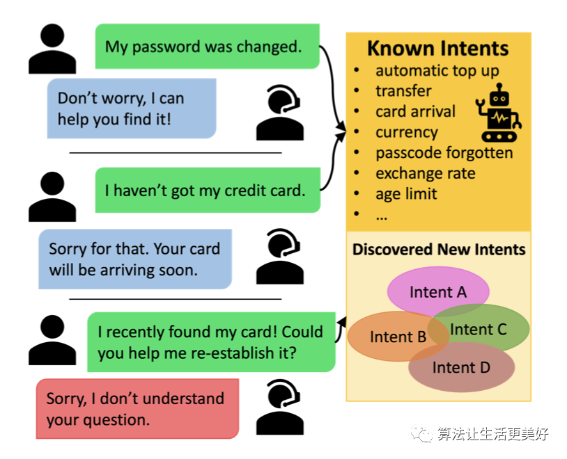
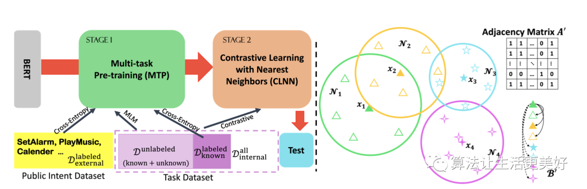
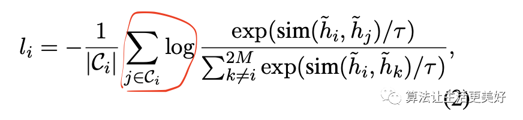
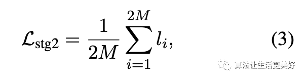

基于预训练和对比学习的新意图发现

前言
从对话人的语句中发现新意图是一个研究方向

一般来说就是对句子通过聚类来解决这一问题，所以这里通常会涉及到两个问题：
（1）怎么表征好一个句子
（2）怎么更好的聚类
今天就给大家介绍本篇～，对了，关于新意图类的相关的paper，笔者之前也介绍过一篇进行了汇总，感兴趣的小伙伴可以穿梭：
《新类识别/领域自适应-聚类》：https://mp.weixin.qq.com/s/A8QVahx__K_GN1xTXjlaHg
本次介绍的：
paper：https://aclanthology.org/2022.acl-long.21.pdf
代码：https://github.com/fanolabs/NID_ACLARR2022
方法
总体框架如下：

首先我们来看怎么表征好一个句子？
对应的就是上图左边的部分，其实也比较常规，主要就是去搜集一些相关领域的公开标注数据集先去进行监督学习预训练一把预训练模型（比如bert），然后再用领域内的数据进行MLM训练，当然了，如果领域内有一些已经标注的样本，那就更好了，可以进行fintune一下。
这就是框图左边做的事情即用领域内外数据预训练模型，也即paper中说的MTP方法：利用external和internal数据进行预训练。
为了更好的表征句子，作者进一步把对比学习套用了进来即paper Stage 2中的CLNN（Contrastive Learning with Nearest Neighbors）方法
具体的就是先给每一个样本找到其topk个相似的句子或者说相邻的句子集合，这里可以采用向量内积作为相似度，大家看看代码后就会发现这里具体采用的是Faiss检索。
每当来一个样本时，会从其集合中均匀的采样出一个相似样本，然后利用数据增强为和分别生成一个新的样本和，所以和就可以看作是样本两个不同视角下的相似样本，是一对正样本。
假设训练的时候batch大小是M，那么依据上面会形成一个2M*2M邻接矩阵，其中当两个样本是相似的时候也即是一对正样本对的时候，邻接矩阵对应的元素是1，否则是0。
然后进行对比学习：


其中是经过上面讲的预训练模型后的表征向量，是对应的所有正样本
可以看到，相比于一般的对比学习来说，这里的公式对了一步红框的求和部分，也即每个样本有多个正例，这也是为啥作者说是方法是Contrastive Learning with Nearest Neighbors
聚类
经过上面的过程后，句子能够很好的被表征了，接下来就可以聚类啦，具体这里就是简单的使用了很常规的聚类算法kmeans
总结
总的来说，整个过程很常规也很好理解，并且还给出了代码，大家没事可以充电学习一下啦。看看代码，哪怕学习一下对比学习的loss实际怎么实现也算是有收获哦～